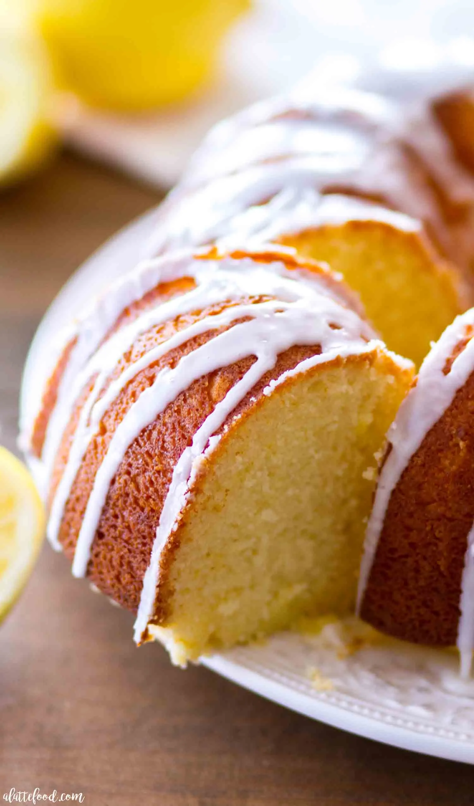

Grandma's Iced Lemon Bundt Cake

Photo credit: from this recipe blog post with an alternative method for this dish
Recipe Description
This was a dessert you would find at any family gathering. It was great for anytime of year but for me it carries extra fondness around the holiday season. It is a simple recipe but is tricky to get the icing just right.
Ingredients
- Yellow Cake Mix
- Eggs
- Lemon
- Powdered Sugar
Steps
-
This simple receipe just comes from a box cake mix but it is still very tasty. Open the mix into a large bowl.
-
Whisk eggs in the mix until well mixed.
-
Grease bundt pan mold and pour mix into the mold. Bake at the correct temperature for appropriate amount of time.
-
Allow the cake to cool on a wire rack after removing from the mold. Wait to apply the icing until the cake has also had a chance to cool.
-
Prepare the icing by mixing powdered sugar with lemon juice until acheiving a frosty white color and thick consistency. Drizzle the icing along the top of the bundt cake and let the frosting drip down the sides.